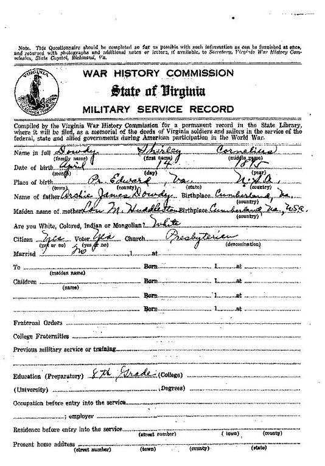

Virginia VirginiaPrince Edward County |
|
Prince Edward 1790 Prince Edward Co Deed Book 8 page 321 - This Indenture made this fifteenth day ofary in the year of our Lord one thousand seven hundred Ninety between John Black of the County of Prince Edward of the one part, and Richard Dowdy of the County of Amelia of the other part -- Witnesseth , that whereas the said John Black of the - County aforesaid for and in consideration of the sum of sixty five pounds current money of Virginia to him in hand paid by the said Richard Dowdy of the County aforesaid , the receipt whereof he doth hereby acknowledge himself fully Satisfied content ed and paid , hath given , granted , Aliened , sold & confirmed , and do by these presents Give , Grant Alien , Sell & confirm unto the said Richard Dowdy his Heirs and assigns forever , one Tract or parcel of Land , contain ing by Estimation One Hundred and fifty acres , be the ? same more or less Situate lying and being on the nches of Vaughan 's Creek in the County of Prince Edward and Bounded as followeth Begining at corner - White Oak thence a south course on Francis Porters and John Porter Line up to Zopher Mashes line , thence a South East course on Zopher Mashes line to James Hoods line , thence East course on Hoods line to Robert Blacks Corner , thence a Straight Course unto the begining -- and the Revertion & Revertions , Remaind & Remainders - thereof , and all the appurtenances thereunto belonging together with the full and whole right and title of the said John Black of in and to the said parcel of Land , To have and to hold the said One hundred and fifty Acres of Land unto the said Richard Dowdy his Heirs and assigns forever , togetherwith all the Houses , Buildings , Orchards , Gardings , Woods , Under Woods , rights priviledges , Hereditiments , Rents Profits and appurtenances what soever there unto belonging , and the said John Black doth himself his Heirs , Executors , and Assigns covenant promise grant and agree to and with the said Richard Dowdy his Heirs , Executors , administrators and assigns to warrant and defend the said Land with all the appurtenances thereunto belonging unto the said Richard Dowdy , his Heirs and assigns for ever , against him the said John Black his Heirs Executors , administrators , and Assigns forever , and against all and every person or persons laying claim to the same , or any part or parcel thereof , and the said John Black doth further covenant and agree to and with the said Richard Dowdy , his Heirs Executors administrators & assigns to give such further and other assurances , at any time within Twenty one years from this date , to the said Dowdy , as shall by the said Dowdy or his Council learned in Law , be reasonably Devised advised or Required , and for the further confirmation of this Deed the said - John Black hath to these presents set his hand and affixed his seal , the day and year first above written Seald Sign and delivered In the Presents of John Black ? Teste Seal . 323 . R d At a Court held for prince Edward County Feby 15th 1790 , This Indenture Between John Black and Richard Dowdy was acknowledged in Court by John Black party thereto to be his act and Deed and ordered to be recorded -- and Darcus his wife being privily examined relinquised her right of Dower and ordered to be Certified ; - Teste Watkins Clk 1798 Prince Edward Co Personal Property Tax (no Dowdys in 1797 and earlier)
1799 Prince Edward Co Personal Property Tax
1800 Prince Edward Co Personal Property Tax
1801 - THOMAS DOWDY m. NANCY BOAZ 25 December 1801 Prince Edward (she is the daughter of Meshach Boaz of Albermarle and Buckingham Va – the Boaz family migrated to Johnson Co IN) 1802 Prince Edward Co Personal Property Tax
1803 Prince Edward Co Personal Property Tax
1803 JAMES McNEAL m. MARY ANN DOWDY 09 December 1803 Prince Edward 1804 Prince Edward Co Personal Property Tax
1804 Prince Edw Co Chancery Records Thanks to Diane for sending along her spectacular finding!!
1805 Prince Edward Co Personal Property Tax
1810 Census
1815 Prince Edward Co Personal Property Tax
1816 - JOHN WORLEY m. PRUDENCE DOWDY 26 November 1816 Prince Edward 1817 - STEPHEN DOWDY m. PRUDENCE GAFFORD 25 March 1817 Prince Edward; Surety John Dowdy; Parent: Mary Gafford with her consent; Married November 6
No Dowdys on 1818 nor 1819 tax lists 1820 Prince Edward Co VA Census
No Dowdys in Prince Edward Co census 1820, 1830, 1840, 1850 1828 Virginia Chancery Records, Prince Edward County, Index #1841-043, Benjamin Dowdy, Etc. vs. James McNeal Etc., filed Apr 1828, abstracted: The heirs of Richard Dowdy, dec'd, are Benjamin Dowdy, Allen Dowdy, Martin Dowdy, and Henry Dowdy; John and Nancy Dowdy, children of John Dowdy, dec'd; Mary Ann wife of James McNeal; and Prudence wife of John M. Whorley. Richard Dowdy's widow, Martha, has died. Martin Dowdy and Henry Dowdy are living in Lexington, Oglethorpe County, Georgia. 1830 Prince Edward Co VA Census
1900 Census -

1920 Census
Archie Dowdey 77
|